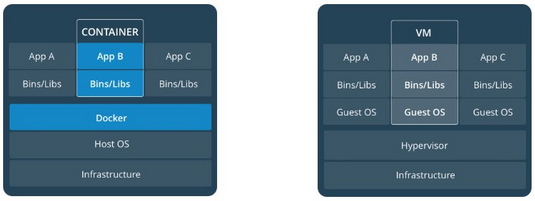

What is a Container?
Virtual machines and containers attempt to solve similar problems, isolating services and their dependencies, however containers do it with much less overhead and are exceedingly flexible. Without getting into too much detail, Docker under the hood shares some of the host system resources in a read only fashion while emulating others. This allows the containers to be virtualized, thinking they are their own system, without the overhead of an entire guest os. Being so light weight, we can segregate services and tiers at a granular level without wasting resources. Then at this level we can add, update and remove containers in a fraction of the time and without interruption as appose to entire VMs.
Conceptually how Docker operates compared to traditional virtualization.
